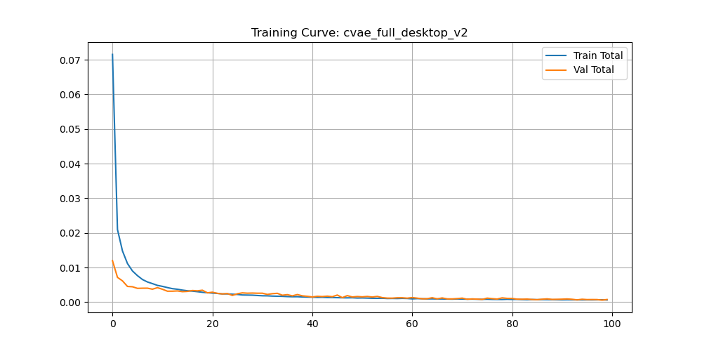

Deployment
Policy deployment.
Deploy a trained policy to real hardware. The policy reads from RealSense and publishes joint commands via the ROS driver.
Real robot
# Real hardware deployment python policy.py \ --model_type cvae_full \ --checkpoint ~/checkpoints/best_cvae_full_v1.pth \ --stats_path ~/final_RGB_joint_goal/dataset_stats.pkl \ --device cuda \ --real_robot \ --vis # live camera overlay
--stats_path is required at inference to un-normalize actions back to joint angles.
Simulation
# MuJoCo simulation (omit --real_robot)
python policy.py \
--model_type cvae_full \
--checkpoint ~/checkpoints/best_cvae_full_v1.pth \
--stats_path ~/final_RGB_joint_goal/dataset_stats.pkl \
--device cpuSame policy interface as real hardware — validate policies in sim before deploying.

CVAE Full — 46.2% task success, 97% of expert visual alignment
Training loss curves

CVAE training & validation loss over 100 epochs